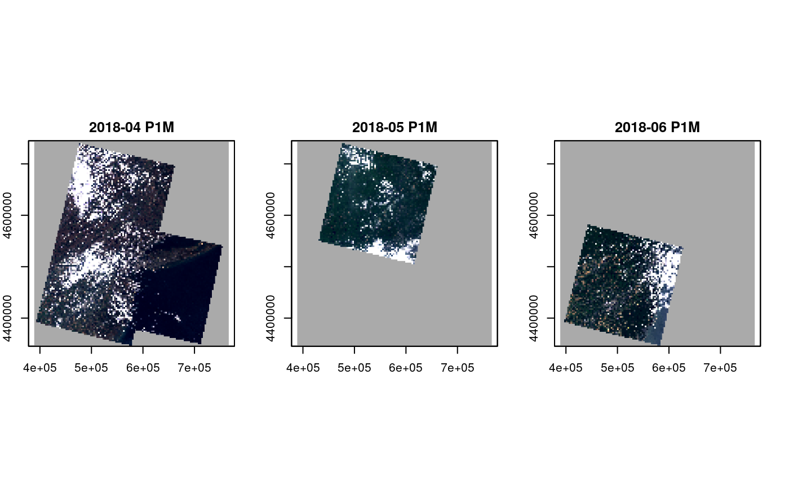
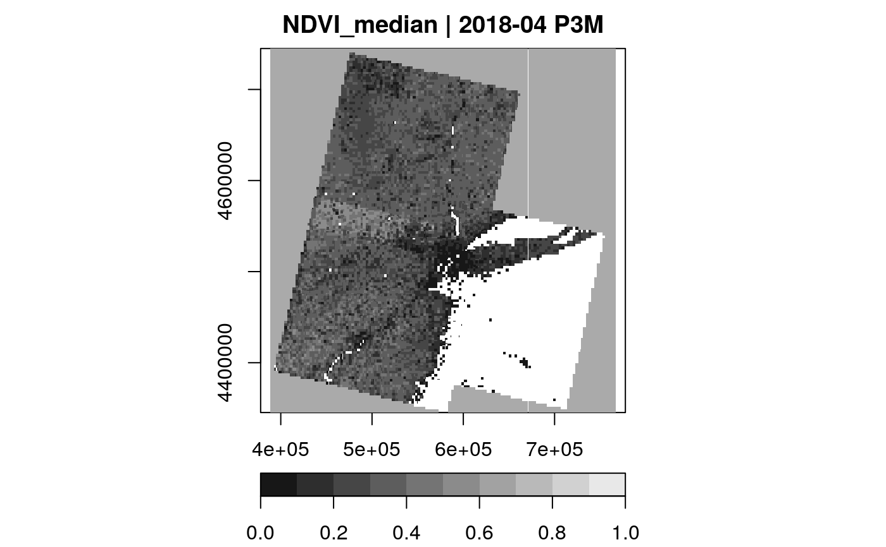

Plot a gdalcubes data cube
# S3 method for cube plot( x, y, ..., nbreaks = 11, breaks = NULL, col = grey(1:(nbreaks - 1)/nbreaks), key.pos = NULL, bands = NULL, t = NULL, rgb = NULL, zlim = NULL, periods.in.title = TRUE, join.timeseries = FALSE, axes = TRUE, ncol = NULL, nrow = NULL, na.color = "#AAAAAA" )
| x | a data cube proxy object (class cube) |
|---|---|
| y | __not used__ |
| ... | further arguments passed to |
| nbreaks | number of breaks, should be one more than the number of colors given |
| breaks | actual breaks used to assign colors to values; if missing, the function subsamples values and uses equally sized intervals between min and max or zlim[0] and zlim[1] if defined |
| col | color definition, can be a character vector with nbreaks - 1 elements or a function such as |
| key.pos | position for the legend, 1 (bottom), 2 (left), 3 (top), or 4 (right). If NULL (the default), do not plot a legend. |
| bands | integer vector with band numbers to plot (this must be band numbers, not band names) |
| t | integer vector with time indexes to plot (this must be time indexes, not date / time) |
| rgb | bands used to assign RGB color channels, vector of length 3 (this must be band numbers, not band names) |
| zlim | vector of length 2, defining the minimum and maximum values to either derive breaks, or define black and white values in RGB plots |
| periods.in.title | logical value, if TRUE, the title of plots includes the datetime period length as ISO 8601 string |
| join.timeseries | logical, for pure time-series plots, shall time series of multiple bands be plotted in a single plot (with different colors)? |
| axes | logical, if TRUE, plots include axes |
| ncol | number of columns for arranging plots with |
| nrow | number of rows for arranging plots with |
| na.color | color used to plot NA pixels |
The style of the plot depends on provided parameters and on the shape of the cube, i.e., whether it is a pure time series and whether it contains multiple bands or not.
Multi-band, multi-temporal images will be arranged with layout() such that bands are represented by the x axis and time is represented by the y axis.
Time series plots can be combined to a single plot by setting join.timeseries = TRUE. For other cases, a default arrangement of the plots is derived, trying to reach
a square overall plot. The layout can be controlled with ncol and nrow, which define the number of rows and columns in the plot layout. Typically, only one of
ncol and nrow is provided. For multi-band, multi-temporal plots, the actual number of rows or columns can be less if the input cube has less bands or time slices.
If caching is enabled for the package (see gdalcubes_use_cache), repeated calls of plot
for the same data cube will not reevaluate the cube. Instead, the temporary result file will be reused, if possible.
Some parts of the function have been copied from the stars package (c) Edzer Pebesma
# create image collection from example Landsat data only # if not already done in other examples if (!file.exists(file.path(tempdir(), "L8.db"))) { L8_files <- list.files(system.file("L8NY18", package = "gdalcubes"), ".TIF", recursive = TRUE, full.names = TRUE) create_image_collection(L8_files, "L8_L1TP", file.path(tempdir(), "L8.db")) } L8.col = image_collection(file.path(tempdir(), "L8.db")) v = cube_view(extent=list(left=388941.2, right=766552.4, bottom=4345299, top=4744931, t0="2018-04", t1="2018-06"), srs="EPSG:32618", nx = 497, ny=526, dt="P1M") plot(select_bands(raster_cube(L8.col, v), c("B02", "B03", "B04")), rgb=3:1)L8.cube = select_bands(raster_cube(L8.col, v), c("B04", "B05")) L8.ndvi = apply_pixel(L8.cube, "(B05-B04)/(B05+B04)", "NDVI") plot(reduce_time(L8.ndvi, "median(NDVI)"), key.pos=1, zlim=c(0,1))